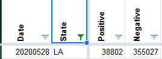
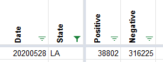

[LA] Negatives reported same as total on 28-May
Issue number 465
space-buzzer opened this issue on May 29, 2020 at 12:52 am
Labels Data quality stale
On 28-May both total and negative were reported as the “total” value, which increased the total reported through the API.
Total from dashboard = 355,027
Negative should be (35,5027 - 38,802) = 316,225
Links: https://covidtracking.com/api/v1/states/LA/20200528.json
Comments
This issue has been automatically marked as stale because it has not had recent activity. It will be closed if no further activity occurs. Thank you for your contributions!
This issue has been closed because it was stale for 15 days, and there was no further activity on it for 10 days. You can feel free to re-open it if the issue is important, and label it as “not stale.”
Looks like I fixed is already but forgot to close the ticket. Thanks, stale bot!
BEFORE 
AFTER 